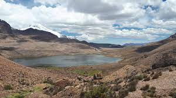
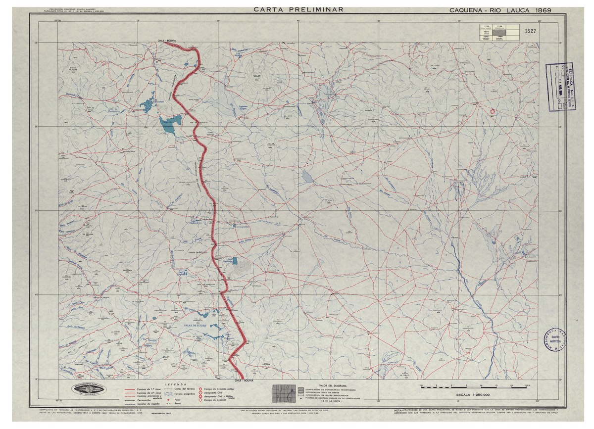

Las lagunas Casiri son dos cuerpos de agua superficial ubicados a 4800 msnm a los pies de los nevado Condoriri, hacia el este del poblado de Caquena, cerca de la frontera con Bolivia Pertenecen a la cuenca hidrográfica del río Caquena.
La laguna Casiri Hembra ubicada más hacia el oeste y con un extremo que apunta hacia el sur.
La laguna Casiri Macho (a veces el Toro) ubicada más hacia el este y con un extremo que apunta hacia el oeste. (La página Map carta de Laguna Sora Pata marca como campo minado.)
Más hacia el noreste, casi en la frontera con Bolivia, se encuentra la laguna Sora Pata.
Ninguna de estas tres lagunas aparece bajo su nombre en el inventario público de lagos de Chile.
La página web "Caminos peligrosos" describe el camino a las lagunas:
camino a las lagunas es de ripio, rocoso, disparejo y con curvas pronunciadas a veces. Normalmente el camino es intransitable en invierno. Es una gran experiencia para conductores experimentados. Evite conducir en esas áreas si no es perito en el asunto. Se requiere un vehículo con tracción en las cuatro ruedas. El camino se inicia en el poblado de Caquena. El camino es bastante empinado. Una tormenta puede cambiar la condición del viaje a una para tracción en las cuatro ruedas o hacer el camino impasable.
El paseo a pié desde Caquena a las lagunas se puede hacer en 4,5 horas y sube desde los 4500 msnm hasta los 4800 m s. n. m.2
